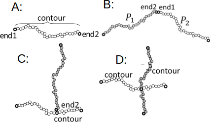

Home
Tutorial: Quizz with SEB
Tutorial contributors: Carsten Svaneborg (FKF SDU).

Illustration of the form factor of a mystery structure.
Before you start
- Download and install Scattering Equation Builder (SEB)
- Complete the polymer tutorial to understand the scattering from Gaussian polymers. Here you also learn how to run SEB and use it for calculating scattering profiles.
- Complete the rod tutorial to understand the scattering from thin stiff rods. Here you also learn how to use rods in SEB.
- Complete the chain of rods tutorial to understand how to connect sub-units together to build structures, and how to use SEB to calculate the form factor of such structures.
Learning outcomes
In this tutorial you will learn about analyzing scattering data, in particular- how different structures gives rise to different form factors.
Quizz
Using SEB can you reproduce the form factor shown above? You can download the data here
Hints
Hint 1: Looking at powerlaws can be useful.
Hint 2: Just as in the analysis of scattering experiment, we usually have an idea what units are involved forming structures. Here we mixed samples that may include polymers (characterization: size $R_g=0.5$ AU, $\beta=0.8$) and/or rods (characterization: length $L=2$ AU, $\beta=0.5$).
Hint 3: From the interactions involved, we do not expect that the observed structure contains more than two units.
Hint 4: Shown below are three possible ways of linking two polymers together. Rods has the same linkage options. "Contour" here means to average the scattering over a randomly chosen monomer along the polymer.

Illustration of possible reference points a) polymer with "end1", "end2" and "contour" as reference points, b) end1-end2 linked structure, c) an example of a end2-contour linked structure, d) an example of a contour-contour linked structure.
In SEB, "contour" is special compared to "end1" and "end". It has to be assigned an unique name when it is used. Thus you would write e.g. "A.contour#pt1" in the code, where "pt1" is the name of a randomly chosen point along the "contour" of the "A" unit.
Here where we only have two units, this business of naming does not matter, because you never need to use it again. When linking several units to geometric reference points such as "end1" or "end2" of a polymer, we are never uncertain what the structure will be or what the scattering equation is. But when we start with randomly chosen points, we need to distinguish between linking several units to the same randomly chosen point, or to independent randomly chosen points, or to a combination of these two. These options gives rise to different structures, and the resulting equations are also different. When a random linking point has a name, we can link more units to the same random point.